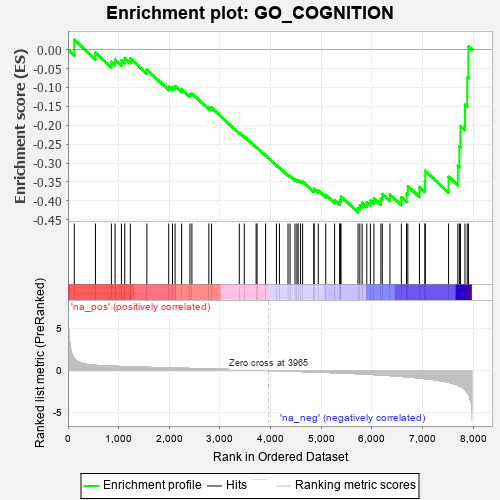
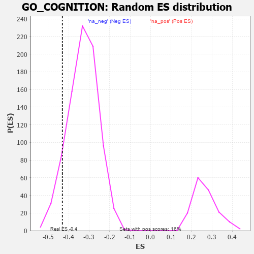

| | | Dataset | 7d |
| Phenotype | NoPhenotypeAvailable |
| Upregulated in class | na_neg |
| GeneSet | GO_COGNITION |
| Enrichment Score (ES) | -0.43043628 |
| Normalized Enrichment Score (NES) | -1.3042867 |
| Nominal p-value | 0.09393579 |
| FDR q-value | 0.46944425 |
| FWER p-Value | 1.0 |
Table: GSEA Results Summary

Fig 1: Enrichment plot: GO_COGNITION
Profile of the Running ES Score & Positions of GeneSet Members on the Rank Ordered List
| PROBE | GENE SYMBOL | GENE_TITLE | RANK IN GENE LIST | RANK METRIC SCORE | RUNNING ES | CORE ENRICHMENT | | 1 | ADCY8 | | | 124 | 1.418 | 0.0265 | No |
| 2 | SRF | | | 542 | 0.615 | -0.0079 | No |
| 3 | AMFR | | | 856 | 0.518 | -0.0320 | No |
| 4 | PDE1B | | | 929 | 0.500 | -0.0262 | No |
| 5 | MEF2C | | | 1054 | 0.473 | -0.0278 | No |
| 6 | NTAN1 | | | 1120 | 0.459 | -0.0224 | No |
| 7 | NSUN5 | | | 1230 | 0.442 | -0.0230 | No |
| 8 | DDHD2 | | | 1557 | 0.381 | -0.0528 | No |
| 9 | CIC | | | 1988 | 0.307 | -0.0980 | No |
| 10 | MEIS2 | | | 2063 | 0.296 | -0.0986 | No |
| 11 | UBA6 | | | 2114 | 0.289 | -0.0963 | No |
| 12 | CREB1 | | | 2243 | 0.269 | -0.1045 | No |
| 13 | BTBD9 | | | 2407 | 0.245 | -0.1178 | No |
| 14 | FEN1 | | | 2446 | 0.237 | -0.1155 | No |
| 15 | MAGT1 | | | 2780 | 0.186 | -0.1521 | No |
| 16 | RIC8A | | | 2833 | 0.179 | -0.1533 | No |
| 17 | GMFB | | | 3381 | 0.091 | -0.2197 | No |
| 18 | CDK5 | | | 3480 | 0.080 | -0.2297 | No |
| 19 | NF1 | | | 3713 | 0.040 | -0.2579 | No |
| 20 | SYT11 | | | 3732 | 0.036 | -0.2591 | No |
| 21 | NIPBL | | | 3900 | 0.010 | -0.2799 | No |
| 22 | MTOR | | | 4114 | -0.025 | -0.3061 | No |
| 23 | SYNJ1 | | | 4173 | -0.038 | -0.3123 | No |
| 24 | SETD5 | | | 4343 | -0.067 | -0.3316 | No |
| 25 | ARF4 | | | 4383 | -0.073 | -0.3344 | No |
| 26 | JPH3 | | | 4481 | -0.091 | -0.3439 | No |
| 27 | NPTN | | | 4519 | -0.098 | -0.3457 | No |
| 28 | NTRK2 | | | 4543 | -0.104 | -0.3455 | No |
| 29 | SYT4 | | | 4590 | -0.116 | -0.3478 | No |
| 30 | LMX1A | | | 4631 | -0.124 | -0.3492 | No |
| 31 | SGK1 | | | 4852 | -0.168 | -0.3720 | No |
| 32 | GATM | | | 4858 | -0.168 | -0.3676 | No |
| 33 | EP300 | | | 4941 | -0.186 | -0.3724 | No |
| 34 | DRD2 | | | 5088 | -0.221 | -0.3843 | No |
| 35 | PTEN | | | 5262 | -0.261 | -0.3984 | No |
| 36 | ITPR3 | | | 5361 | -0.288 | -0.4022 | No |
| 37 | GRIN1 | | | 5381 | -0.291 | -0.3959 | No |
| 38 | DLG4 | | | 5388 | -0.293 | -0.3880 | No |
| 39 | DGKI | | | 5725 | -0.384 | -0.4190 | Yes |
| 40 | TLR2 | | | 5761 | -0.395 | -0.4116 | Yes |
| 41 | BBS4 | | | 5806 | -0.407 | -0.4051 | Yes |
| 42 | VLDLR | | | 5898 | -0.434 | -0.4036 | Yes |
| 43 | TTBK1 | | | 5969 | -0.460 | -0.3988 | Yes |
| 44 | PPT1 | | | 6038 | -0.485 | -0.3929 | Yes |
| 45 | RAG1 | | | 6176 | -0.530 | -0.3945 | Yes |
| 46 | INSR | | | 6204 | -0.538 | -0.3819 | Yes |
| 47 | GALR2 | | | 6355 | -0.599 | -0.3830 | Yes |
| 48 | CLN3 | | | 6580 | -0.699 | -0.3905 | Yes |
| 49 | TTC8 | | | 6682 | -0.753 | -0.3808 | Yes |
| 50 | EGFR | | | 6708 | -0.765 | -0.3612 | Yes |
| 51 | GHSR | | | 6937 | -0.894 | -0.3634 | Yes |
| 52 | CTNS | | | 7044 | -0.965 | -0.3481 | Yes |
| 53 | GRM5 | | | 7053 | -0.969 | -0.3202 | Yes |
| 54 | VDAC1 | | | 7512 | -1.409 | -0.3362 | Yes |
| 55 | ADCY1 | | | 7695 | -1.752 | -0.3070 | Yes |
| 56 | ASIC1 | | | 7726 | -1.838 | -0.2561 | Yes |
| 57 | CASP3 | | | 7747 | -1.902 | -0.2020 | Yes |
| 58 | GRIA1 | | | 7836 | -2.260 | -0.1458 | Yes |
| 59 | FYN | | | 7881 | -2.622 | -0.0733 | Yes |
| 60 | PLCB1 | | | 7904 | -2.841 | 0.0085 | Yes |
Table: GSEA details [plain text format]

Fig 2: GO_COGNITION: Random ES distribution
Gene set null distribution of ES for GO_COGNITION